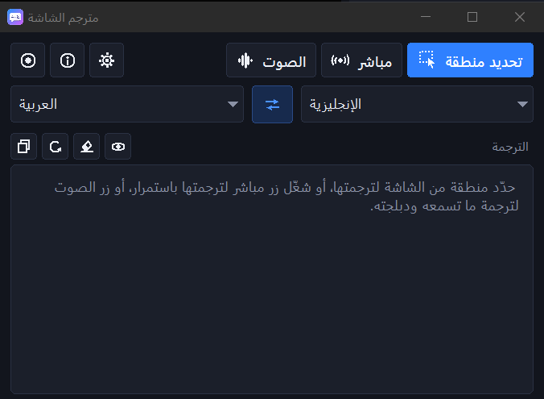
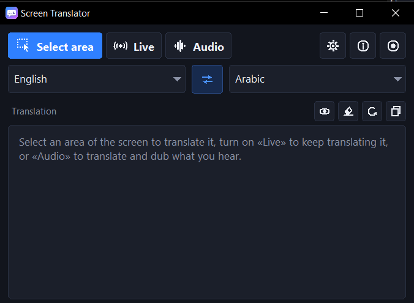
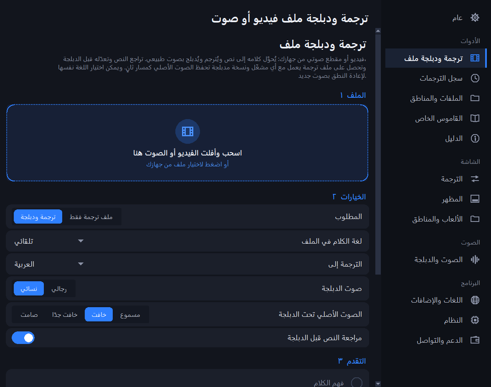
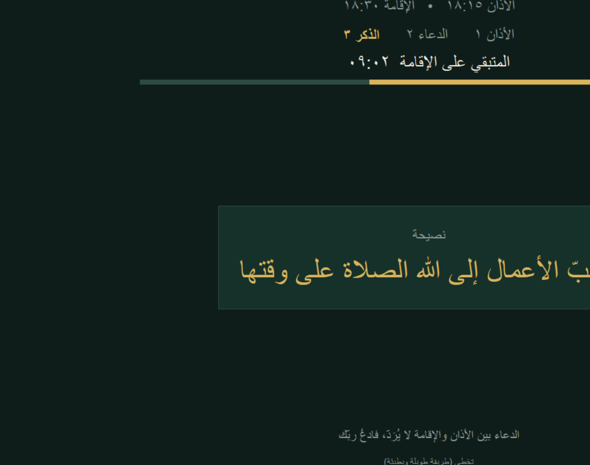
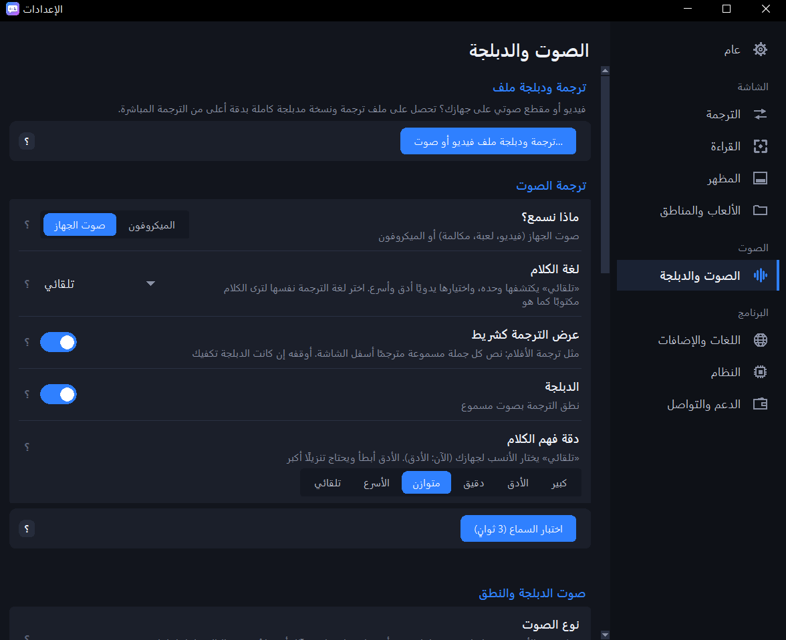
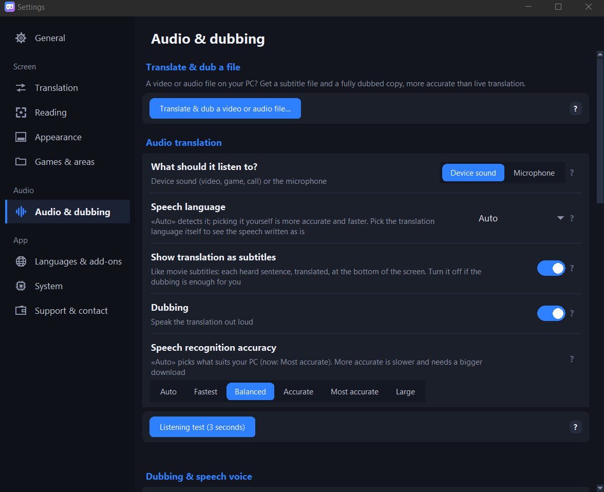

ترجم أي شيء على شاشتك، واسمعه بالعربية
Translate anything on your screen, and hear it in your language
ألعاب، فيديوهات، مواقع وبرامج: حدد النص فتظهر ترجمته فوقه، أو دع البرنامج يسمع الصوت ويترجمه ويدبلجه بصوت طبيعي. مجاني لويندوز.
Games, videos, websites and apps: select text and see its translation on top of it, or let the app listen, translate and dub the audio in a natural voice. Free for Windows.


ماذا يفعل
What it does
أربع أدوات في برنامج واحد، بواجهة عربية كاملة.
Four tools in one app, with a full Arabic or English interface.
ترجمة الشاشة
Screen translation
حدد منطقة فتظهر الترجمة فوق النص في مكانه أو في شريط. ووضع «مباشر» يتابع النص كلما تغيّر.
Select an area and the translation appears over the text or in a bar. Live mode follows the text as it changes.
ترجمة الصوت ودبلجته
Live audio translation
يسمع صوت الجهاز أو الميكروفون، ويعرض الترجمة كشريط سفلي، وينطقها بصوت طبيعي.
Listens to your PC or microphone, shows subtitles, and speaks the translation in a natural voice.
دبلجة الفيديو
Video dubbing
أفلت فيديو أو ملف صوت: تحصل على ملف ترجمة يعمل مع أي مشغّل، ونسخة مدبلجة كاملة بعد مراجعتك للنص.
Drop a video or audio file: get a subtitle file for any player and a fully dubbed copy, after you review the text.
يعمل بلا إنترنت أيضًا
Works offline too
أكثر من 39 لغة، وترجمة وفهم للكلام على جهازك إن أردت أن يبقى كل شيء عندك.
39+ languages, with on-device translation and speech recognition when you want everything to stay on your PC.
من داخل البرنامج
Inside the app
لقطات حقيقية من الإصدار الحالي.
Real screenshots from the current version.




التثبيت
Installing
- نزّل المثبّت من الزر أعلاه وشغّله. لا يحتاج صلاحيات المسؤول.Download the installer above and run it. No admin rights needed.
- اضغط Ctrl+Alt+T وحدد أي نص على الشاشة.Press Ctrl+Alt+T and select any text on screen.
- لترجمة الصوت اضغط زر «الصوت» أو Ctrl+Alt+A.For audio, press the Audio button or Ctrl+Alt+A.
الدعم والتواصل
Support
البرنامج مجاني ويعمل عليه شخص واحد. ملاحظتك تساعد، ودعمك يُبقيه مستمرًا.
The app is free and made by one person. Your feedback helps, and your support keeps it going.
مشكلة أو فكرة
A problem or an idea
أرسلها هناSend it here، أو من داخل البرنامج: الإعدادات ← الدعم والتواصل., or from the app: Settings → Support.
ادعم البرنامج
Support the app
PayPal، وفودافون كاش وغيرها من داخل البرنامج., and more options inside the app.